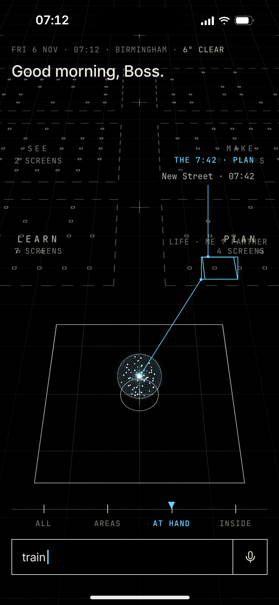
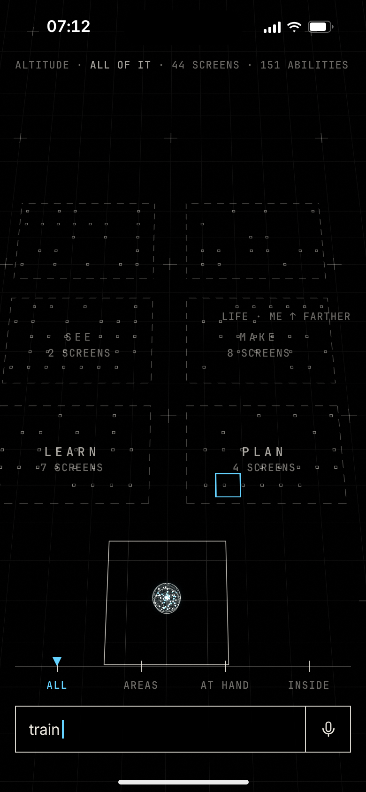
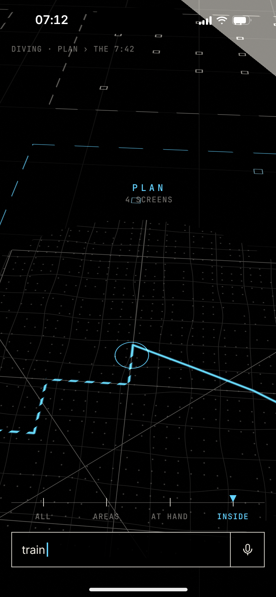

Everything Ghosty can see and do is plotted on one map round the orb. He types a word; the camera rises, crosses and dives, and at the deepest zoom the point is the thing.

1 · He types a word07:12. He types “train”. Before he finishes, the Journey is plotted in Plan and a flight path runs to it from the orb.

2 · UpThe camera rises: the whole field at once, every area and every point; the scale moves to All.

3 · Across and downIt crosses to Plan and dives at the Journey’s point; inside its square the field is already the city.
4 · The StageAt the deepest zoom the point is the thing: the streets, the walk and the train. Pinch out and he is home.